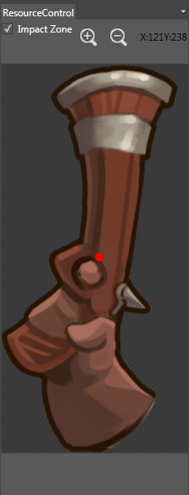

Resource Manager Panel
Introduction

In the Resource Editor window, you can edit the collision zone and anchor information of the currently selected skeleton using the Resource Manager Panel.
Introduction
Accepts collision
Checking the box creates a collision zone. If checked, hold down the left mouse button to draw the texture's collision zone.
Collision Zone
Hold down the left mouse button in the Explorer panel, and drag the picture to the draw collision zone. The collision zone is the translucent rectangular area.
Zoom In
The plus button is used to control the zooming in operation of the Resource Manager Panel.
Zoom Out
The minus button is used to control the zooming out operation of the Resource Manager Panel.
Anchor Point

Sets the anchor point of skeleton or textures. Sets the point as the axis when choosing between skeleton or textures options.
Content Menu
Cancel
Cancels a collision area
Change Color
Changes the color in the collision area.
Change Background
Chooses pictures in the disk and sets one of them as background.